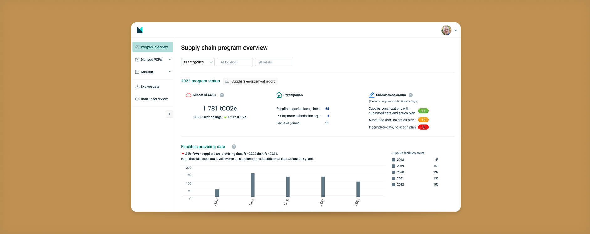
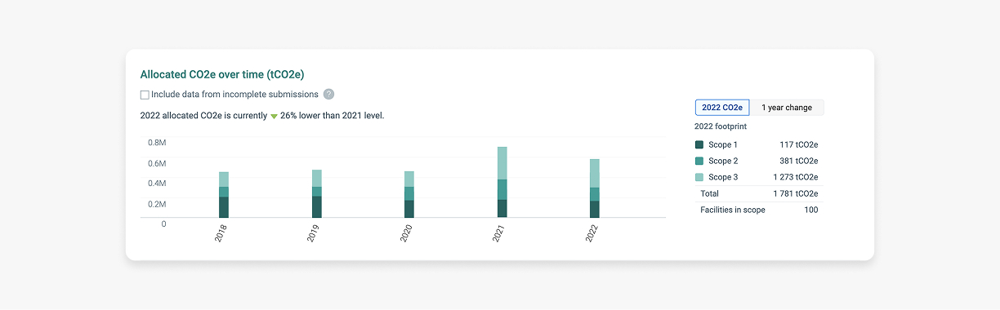
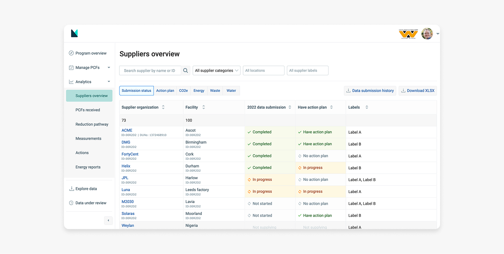
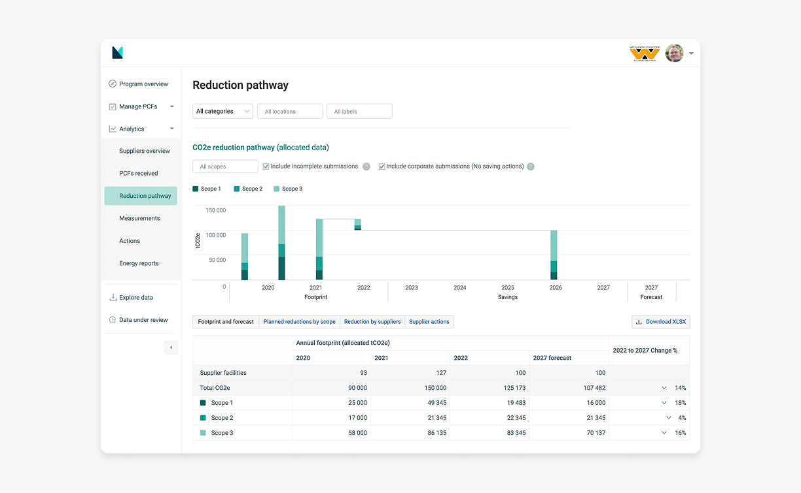
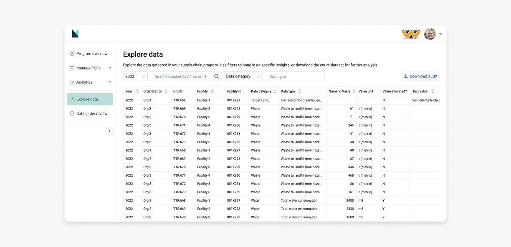
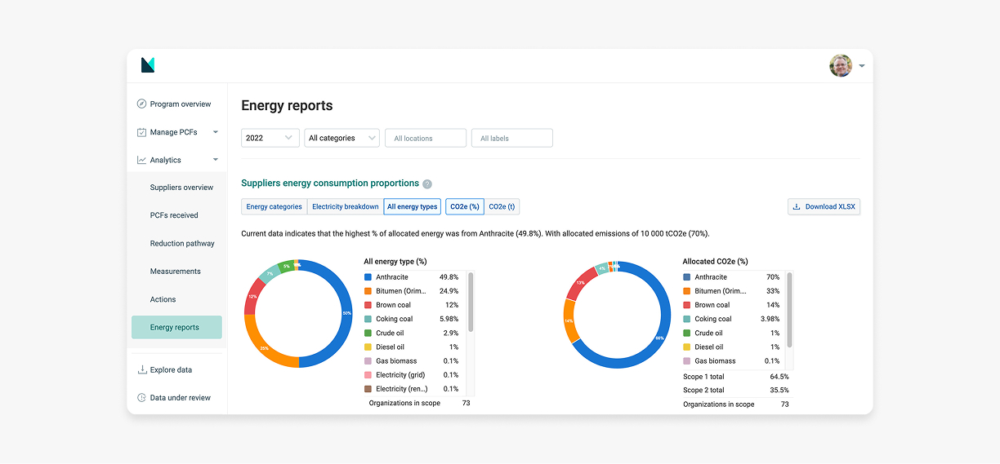

Supply chain analytics dashboard
A promise of the Manufacture 2030 platform (M2030), is that it helps corporations to capture and analyse the environmental impact of their global supply chain; and provide actionable insights to help plan future improvements. To this end we revisited an MVP development of the M2030 analytic platform to improve usability and to design new, useful analytics.

GOAL
In revisiting the M2030 analytics platform, the goal is to leverage on lessons learned from the initial MVP implementation, and make improvements to the usability of the analytics platform, as well as provide users with additional relevant insights.
LESSONS FROM MVP
We were able to gather live feedback from the usage of the MVP platform, as well as from subsequent discussions with corporate clients. Some key lessons:
Confirmation of the Persona that actively make use of the platform:
- Sustainability, and Environment, health and safety manager
- Category manager
- Procurement manager (As 2nd degrees user, consuming summary from others)
General issues
- Some reports feels too complex and not intuitive to understand.
- Specific analytics uses non-standard chart types.
- Some analytics attempted to provide multiple insights, however making the intended value less clear
- Uncertainty of data quality of the dashboard.
- Related to the complexity of some reports...
- ...and partly attributable to lack of transparency of underlying calculations.
Additional needs
- Tracking suppliers participation as a success metric. Particularly seen to be important as many of these supply chain environmental data programs are at an early stage of maturity.
- Additional supplier energy consumption analytics. Going beyond broad level CO2e analyses, and enable more detailed hotpot identification in suppliers energy resources.
REVISED DESIGNS
Examples of designs from the reworked dashboard.




